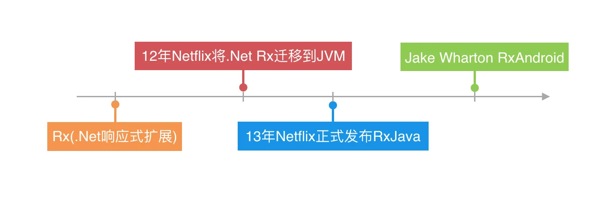
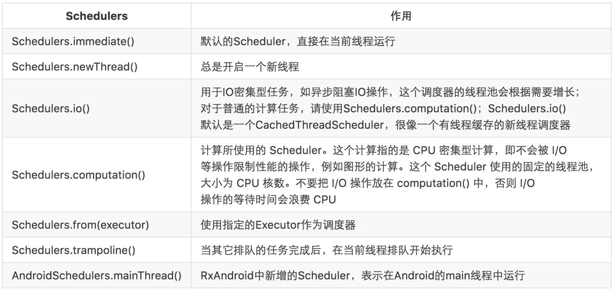

RxJava 基础
1. 简介
1.1 响应式编程
在介绍RxJava前，我们先聊聊响应式编程。那么什么是响应式编程呢？响应式编程是一种基于异步数据流概念的编程模式。数据流就像一条河：它可以被观测，被过滤，被操作，或者为新的消费者与另外一条流合并为一条新的流。
响应式编程的一个关键概念是事件。事件可以被等待，可以触发过程，也可以触发其它事件。事件是唯一的以合适的方式将我们的现实世界映射到我们的软件中：如果屋里太热了我们就打开一扇窗户。同样的，当我们的天气app从服务端获取到新的天气数据后，我们需要更新app上展示天气信息的UI；汽车上的车道偏移系统探测到车辆偏移了正常路线就会提醒驾驶者纠正，就是是响应事件。
今天，响应式编程最通用的一个场景是UI：我们的移动App必须做出对网络调用、用户触摸输入和系统弹框的响应。在这个世界上，软件之所以是事件驱动并响应的是因为现实生活也是如此。
1.2 什么是 RxJava
RxJava本质上是一个异步操作库，是一个能让你用极其简洁的逻辑去处理繁琐复杂任务的异步事件库。
1.3 RxJava 好在哪
假设我们安居客用户App上有个需求，需要从服务端拉取上海浦东新区塘桥板块的所有小区 Community[] communities，每个小区下包含多套房源 List<House> houses；我们需要把塘桥板块的所有总价大于500W的房源都展示在App的房源列表页。用于从服务端拉取communities需要发起网络请求，比较耗时，因此需要在后台运行。而这些房源信息需要展示到App的页面上，因此需要在UI线程上执行。
new Thread() {
@Override
public void run() {
super.run();
//从服务端获取小区列表
List<Community> communities = getCommunitiesFromServer();
for (Community community : communities) {
List<House> houses = community.houses;
for (House house : houses) {
if (house.price >= 5000000) {
runOnUiThread(new Runnable() {
@Override
public void run() {
//将房子的信息添加到屏幕上
addHouseInformationToScreen(house);
}
});
}
}
}
}
}.start();
使用RxJava的写法是这样的：
Observable.from(getCommunitiesFromServer())
.flatMap(new Func1<Community, Observable<House>>() {
@Override
public Observable<House> call(Community community) {
return Observable.from(community.houses);
}
}).filter(new Func1<House, Boolean>() {
@Override
public Boolean call(House house) {
return house.price>=5000000;
}
}).subscribeOn(Schedulers.io())
.observeOn(AndroidSchedulers.mainThread())
.subscribe(new Action1<House>() {
@Override
public void call(House house) {
//将房子的信息添加到屏幕上
addHouseInformationToScreen(house);
}
});
从上面这段代码我们可以看到：虽然代码量看起来变复杂了，但是RxJava的实现是一条链式调用，没有任何的嵌套；整个实现逻辑看起来异常简洁清晰，这对我们的编程实现和后期维护是有巨大帮助的。特别是对于那些回调嵌套的场景。配合Lambda表达式还可以简化成这样：
Observable.from(getCommunitiesFromServer())
.flatMap(community -> Observable.from(community.houses))
.filter(house -> house.price>=5000000)
.subscribeOn(Schedulers.io())
.observeOn(AndroidSchedulers.mainThread())
.subscribe(this::addHouseInformationToScreen);
2. 基本概念及使用介绍
2.1 扩展的观察者模式
在RxJava中主要有4个角色：
- Observable
- Subject
- Observer
- Subscriber
Observable 和 Subject 是两个“生产”实体，Observer 和 Subscriber 是两个“消费”实体。说直白点 Observable 对应于观察者模式中的被观察者，而 Observer 和 Subscriber 对应于观察者模式中的观察者。Subscriber 其实是一个实现了 Observer 的抽象类，后面我们分析源码的时候也会介绍到。Subject 比较复杂，以后再分析。
观察者 Observer 和被观察者 Observable 通过 subscribe() 方法实现订阅关系。从而 Observable 可以在需要的时候发出事件来通知 Observer 。
2.2 RxJava 如何使用
第一步：创建观察者 Observer
Observer<Object> observer = new Observer<Object>() {
@Override
public void onCompleted() {
}
@Override
public void onError(Throwable e) {
}
@Override
public void onNext(Object s) {
}
};
- RxJava中规定当不再有新的事件发出时，可以调用
onCompleted()方法作为标示； - 当事件处理出现异常时框架自动触发
onError()方法； - 同时 Observables 支持
链式调用，从而避免了回调嵌套的问题。
第二步：创建被观察者 Observable
Observable<Object> observable = Observable.create(new Observable.OnSubscribe<Object>() {
@Override
public void call(Subscriber<? super Object> subscriber) {
}
});
Observable.create() 方法可以创建一个 Observable ，使用 create() 创建 Observable 需要一个 OnSubscribe 对象，这个对象继承 Action1 。当观察者订阅我们的 Observable 时，它作为一个参数传入并执行 call() 函数。
除了 create()，just() 和 from() 同样可以创建 Observable。看看下面两个例子：
just(T…) 将传入的参数依次发送:
Observable observable = Observable.just("One", "Two", "Three");
//上面这行代码会依次调用
//onNext("One");
//onNext("Two");
//onNext("Three");
//onCompleted();
from(T[])/from(Iterable<? extends T>) 将传入的数组或者 Iterable 拆分成 Java 对象依次发送:
String[] parameters = {"One", "Two", "Three"};
Observable observable = Observable.from(parameters);
//上面这行代码会依次调用
//onNext("One");
//onNext("Two");
//onNext("Three");
//onCompleted();
第三步：被观察者 Observable 订阅观察者 Observer
有了观察者和被观察者，我们就可以通过subscribe()，来实现二者的订阅关系了。
observable.subscribe(observer);
完整的RxJava调用：
Observable.create(new Observable.OnSubscribe<Integer>() {
@Override
public void call(Subscriber<? super Integer> subscriber) {
for (int i = 0; i < 5; i++) {
subscriber.onNext(i);
}
subscriber.onCompleted();
}
}).subscribe(new Observer<Integer>() {
@Override
public void onCompleted() {
System.out.println("onCompleted");
}
@Override
public void onError(Throwable e) {
System.out.println("onError");
}
@Override
public void onNext(Integer item) {
System.out.println("Item is " + item);
}
});
首先我们使用 Observable.create() 创建了一个新的 Observable
OnSubscribe 的 call() 方法中的参数 Subscriber 怎么就变成了 subscribe() 方法中的观察者 Observer ？
先看看Subscriber这个类：
public abstract class Subscriber<T> implements Observer<T>, Subscription {
...
}
从源码中我们可以看到，Subscriber 是 Observer 的一个抽象实现类，所以我首先可以肯定的是 Subscriber 和 Observer 类型是一致的。接着往下我们看看 subscribe() 这个方法：
public final Subscription subscribe(final Observer<? super T> observer) {
//这里的if判断对于我们要分享的问题没有关联，可以先无视
if (observer instanceof Subscriber) {
return subscribe((Subscriber<? super T>)observer);
}
return subscribe(new Subscriber<T>() {
@Override
public void onCompleted() {
observer.onCompleted();
}
@Override
public void onError(Throwable e) {
observer.onError(e);
}
@Override
public void onNext(T t) {
observer.onNext(t);
}
});
}
我们看到 subscribe() 方法内部首先将传进来的 Observer 做了一层代理，将它转换成了 Subscriber 。我们再看看这个方法内部的 subscribe() 方法：
public final Subscription subscribe(Subscriber<? super T> subscriber) {
return Observable.subscribe(subscriber, this);
}
进一步往下追踪看看 return 后面这段代码到底做了什么。精简掉其他无关代码后的 subscribe(subscriber, this) 方法是这样的：
private static <T> Subscription subscribe(Subscriber<? super T> subscriber, Observable<T> observable) {
subscriber.onStart();
try {
hook.onSubscribeStart(observable, observable.onSubscribe).call(subscriber);
return hook.onSubscribeReturn(subscriber);
} catch (Throwable e) {
return Subscriptions.unsubscribed();
}
}
前面这个 hook.onSubscribeStart(observable, observable.onSubscribe) 返回的是它自己括号内的第二个参数 observable.onSubscribe ，然后调用了它的 call 方法。而这个 observable.onSubscribe 正是 create() 方法中的 Subscriber，这样整个流程就理顺了。看到这里是不是对RxJava的执行流程清晰了一点呢？
2.3 异步
开篇就讲到RxJava就是来处理异步任务的。但是默认情况下我们在哪个线程调用subscribe()就在哪个线程生产事件，在哪个线程生产事件就在哪个线程消费事件。那怎么做到异步呢？RxJava为我们提供Scheduler用来做线程调度，我们来看看RxJava提供了哪些Scheduler。
同时 RxJava 还为我们提供了 subscribeOn() 和 observeOn() 两个方法来指定 Observable 和 Observer 运行的线程。
Observable.from(getCommunitiesFromServer())
.flatMap(community -> Observable.from(community.houses))
.filter(house -> house.price>=5000000)
.subscribeOn(Schedulers.io())
.observeOn(AndroidSchedulers.mainThread())
.subscribe(this::addHouseInformationToScreen);
subscribeOn(Schedulers.io()) 指定了获取小区列表、处理房源信息等一系列事件都是在 IO 线程中运行，observeOn(AndroidSchedulers.mainThread()) 指定了在屏幕上展示房源的操作在 UI 线程执行。这就做到了在子线程获取房源，主线程展示房源。
3. 操作符
RxJava中的操作符主要分成了三类：
- 转换类操作符
- map
- flatMap
- concatMap
- flatMapIterable
- switchMap
- scan
- groupBy
…
- 过滤类操作符
- fileter
- take
- takeLast
- takeUntil
- distinct
- distinctUntilChanged
- skip
- skipLast
…
- 组合类操作符
- merge
- zip
- join
- combineLatest
- and/when/then
- switch
- startSwitch
…
4. 从微观角度解读 RxJava 源码
version: 1.1.9
4.1 RxJava 基本流程分析
我们在基本概念与使用中介绍过，一个最基本的 RxJava 调用是这样的：
Observable.create(new Observable.OnSubscribe<String>() {
@Override
public void call(Subscriber<? super String> subscriber) {
subscriber.onNext("Hello RxJava!");
subscriber.onCompleted();
}
}).subscribe(new Subscriber<String>() {
@Override
public void onCompleted() {
System.out.println("completed!");
}
@Override
public void onError(Throwable e) {
}
@Override
public void onNext(String s) {
System.out.println(s);
}
});
首先调用 Observable.create() 创建一个被观察者 Observable ，同时创建一个 OnSubscribe 作为 create() 方法的入参；接着创建一个观察者 Subscriber ，然后通过 subseribe() 实现二者的订阅关系。这里涉及到三个关键对象和一个核心的方法：
对象：
- Observable（被观察者）
- OnSubscribe (从设计模式的角度来理解，OnSubscribe.call() 可以看做是观察者模式中被观察者用来通知观察者的 notifyObservers() 方法)
- Subscriber（观察者）
方法：
- subscribe()（实现观察者与被观察者订阅关系的方法）
4.1.1 创建被观察者 Observable
首先我们来看看 Observable.create() 的实现:
public static <T> Observable<T> create(OnSubscribe<T> f) {
return new Observable<T>(RxJavaHooks.onCreate(f));
}
这里创建了一个被观察者 Observable ，同时将 RxJavaHooks.onCreate(f) 作为构造函数的参数，源码如下：
protected Observable(OnSubscribe<T> f) {
this.onSubscribe = f;
}
我们看到源码中直接将参数 RxJavaHooks.onCreate(f) 赋值给了当前我们构造的被观察者 Observable 的成员变量 onSubscribe 。那么 RxJavaHooks.onCreate(f) 返回的又是什么呢？我们接着往下看：
public static <T> Observable.OnSubscribe<T> onCreate(Observable.OnSubscribe<T> onSubscribe) {
Func1<OnSubscribe, OnSubscribe> f = onObservableCreate; // null
if (f != null) {
return f.call(onSubscribe);
}
return onSubscribe;
}
由于我们并没调用 RxJavaHooks.initCreate()，所以上面代码中的 onObservableCreate 为null；因此 RxJavaHooks.onCreate(f) 最终返回的就是 f ，也就是我们在 Observable.create() 的时候 new 出来的 OnSubscribe 。
至此我们做下逻辑梳理：Observable.create() 方法构造了一个被观察者 Observable 对象，同时将 new 出来的 OnSubscribe 赋值给了该 Observable 的成员变量 onSubscribe 。
4.1.2 创建观察者 Subscriber
接着我们看下观察者Subscriber的源码，为了增加可读性，我去掉了源码中的注释和部分代码。
public abstract class Subscriber<T> implements Observer<T>, Subscription {
//订阅事件集，所有发送给当前Subscriber的事件都会保存在这里
private final SubscriptionList subscriptions;
...
protected Subscriber(Subscriber<?> subscriber, boolean shareSubscriptions) {
this.subscriber = subscriber;
this.subscriptions = shareSubscriptions && subscriber != null ? subscriber.subscriptions : new SubscriptionList();
}
...
@Override
public final void unsubscribe() {
subscriptions.unsubscribe();
}
@Override
public final boolean isUnsubscribed() {
return subscriptions.isUnsubscribed();
}
public void onStart() {
}
...
}
public interface Subscription {
void unsubscribe();
boolean isUnsubscribed();
}
Subscriber 实现了 Subscription 接口，从而对外提供 isUnsubscribed() 和 unsubscribe() 方法。
- isUnsubscribed() 用于判断是否已经取消订阅；
- unsubscribe() 用于将订阅事件列表(也就是当前观察者的成员变量 subscriptions )中的所有 Subscription 取消订阅，并且不再接受观察者 Observable 发送的后续事件。
4.1.3 实现订阅关系 subscribe()
前面我们分析了观察者和被观察者相关的源码，那么接下来便是整个订阅流程中最最关键的环节了。
public final Subscription subscribe(Subscriber<? super T> subscriber) {
return Observable.subscribe(subscriber, this);
}
static <T> Subscription subscribe(Subscriber<? super T> subscriber, Observable<T> observable) {
...
subscriber.onStart();
if (!(subscriber instanceof SafeSubscriber)) {
subscriber = new SafeSubscriber<T>(subscriber);
}
try {
RxJavaHooks.onObservableStart(observable, observable.onSubscribe).call(subscriber);
return RxJavaHooks.onObservableReturn(subscriber);
} catch (Throwable e) {
...
return Subscriptions.unsubscribed();
}
}